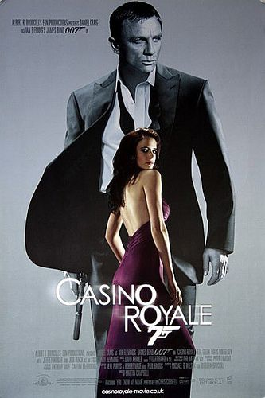

Latest Reviews
James Bond: Casino Royal
My favourite of the Daniel Craig saga so far, Casino Royal packs an action-packed plotline with a parkour opening that's sure to get your blood pumping. But, a bond movie is only as good as its villian and Le Chiffre might have evil intentions at heart but he can come across as not very hateable. That aside, with lots of twists, and a compelling storyline and subplot, Casino Royal is, in my opinion, the best start to a great James Bond Saga. 7.5/10
 Image SourceWhiplash
Wow! What a movie. Whiplash is a grueling tale of an intelligent jazz drummer who get's chosen to play in Terrence Fletcher's Studio Band. Fletcher is the opposite of a supportive and kind conductor who instead enjoys torturing his students until they are perfect. He makes his students compete with one and other to their breaking point. A thrilling but "horrific to watch" story that will grip you. Highly recomend. 8/10.
 Image Source
Image Source
Future Film Reviews
- Forest Gump
- James Bond: Skyfall
- Cats